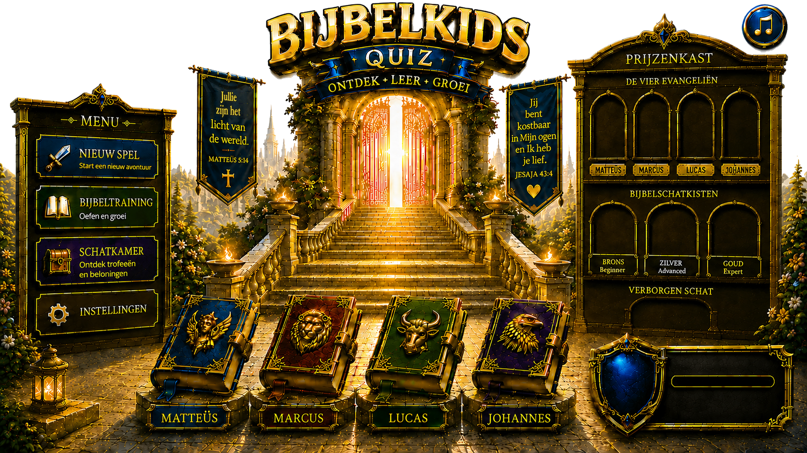
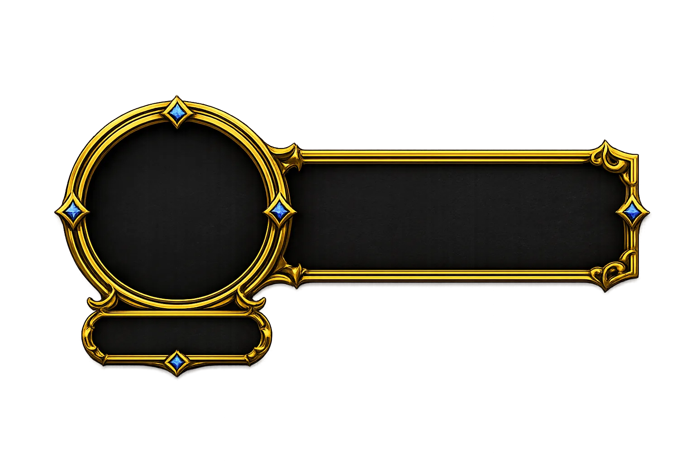
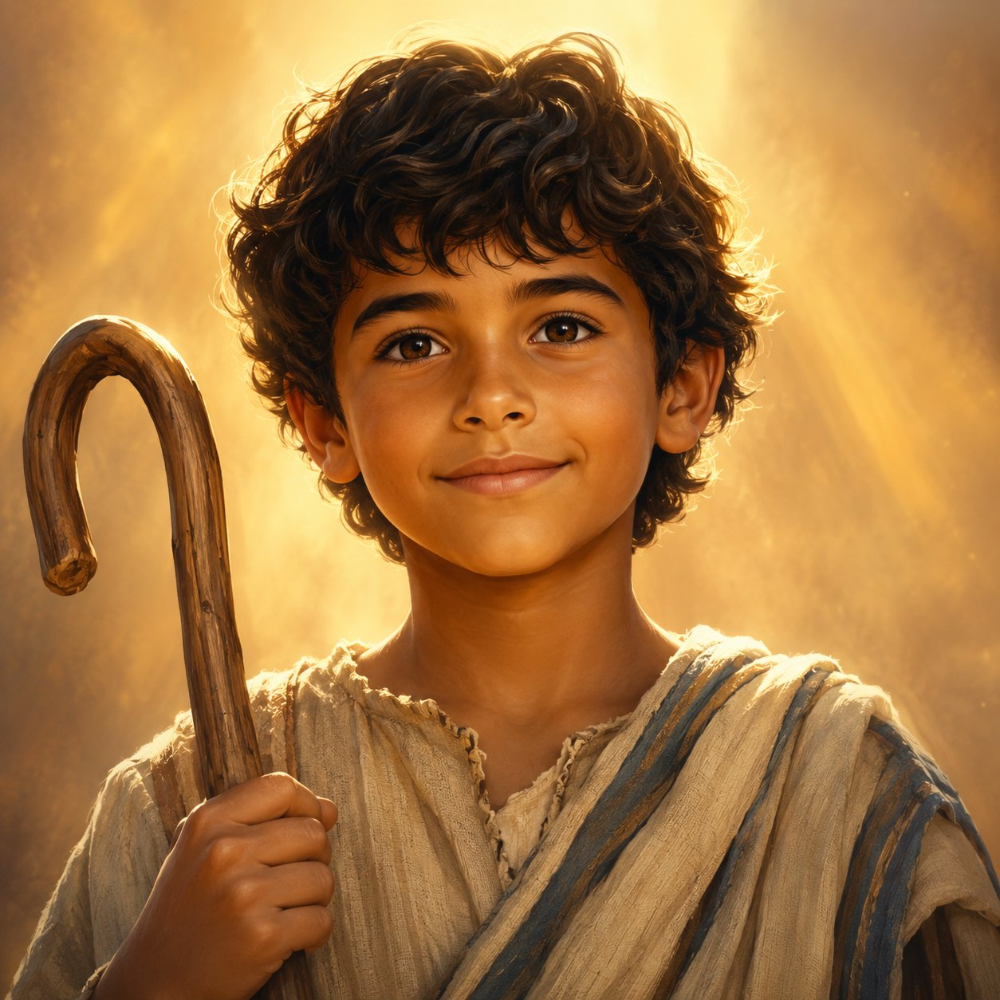
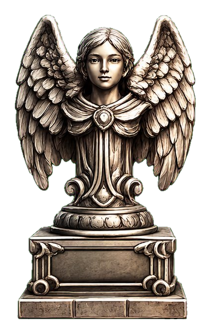
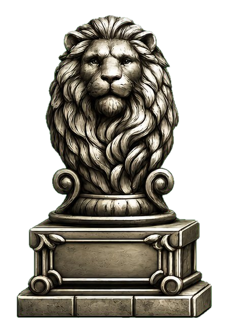
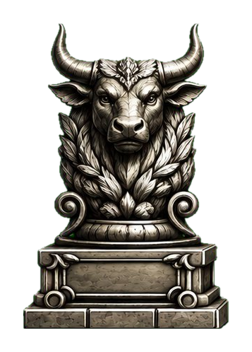
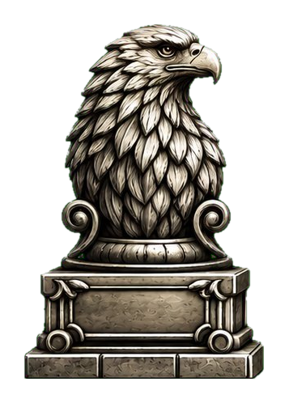
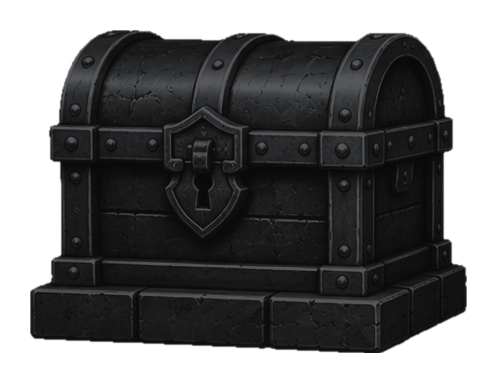
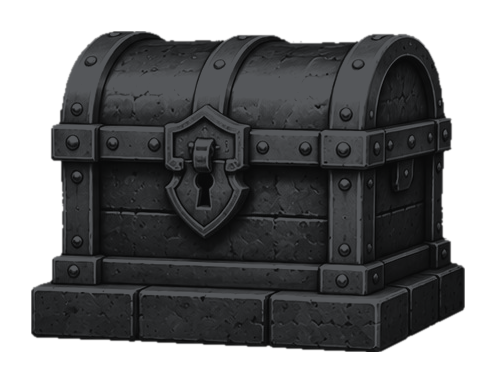
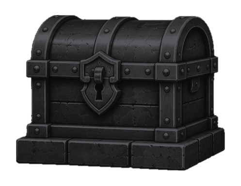
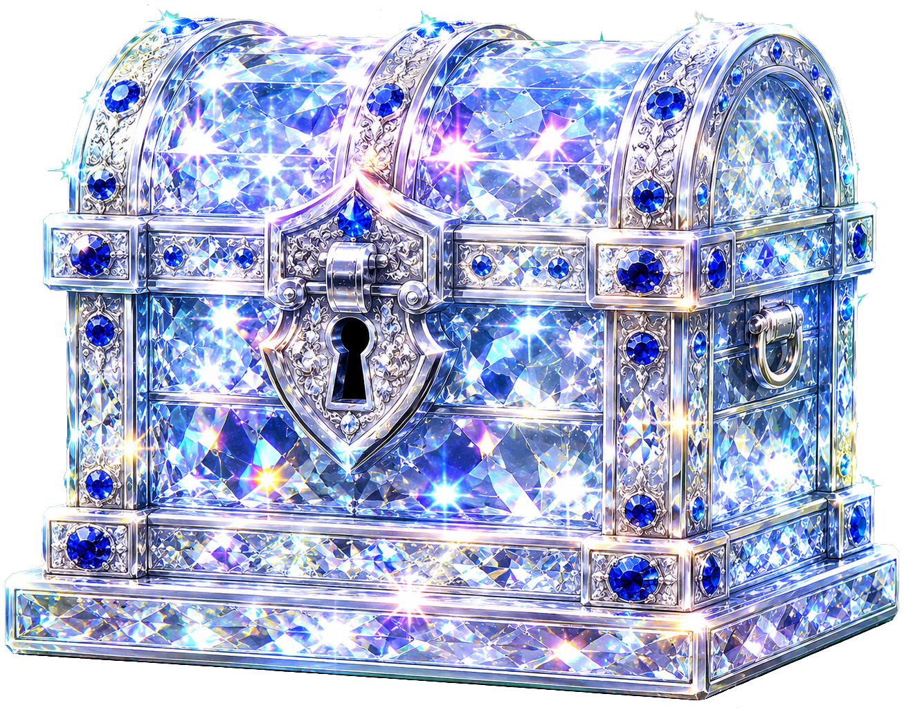
Kies je avatar
Kies je speler
Kies je niveau
Wil je stoppen met deze ronde? Je voortgang van deze ronde gaat verloren.
Oefen en groei
Kies een evangelie
Kies een evangelie
Kies een niveau
Kies een onderwerp
Kies een onderwerp
Speel eerst de Verborgen Schat om te ontgrendelen
Apostel — Het woord betekent "gezant" of "boodschapper", van het Griekse apostolos: iemand die wordt uitgezonden. In de oudheid was een apostel geen gewone postbode, maar een officiële afgezant — zoals een ambassadeur — die namens een koning op pad ging; zijn woorden golden als de woorden van de koning zelf. In het Nieuwe Testament koos Jezus twaalf van zijn leerlingen (discipelen) uit en zond hen uit om zijn boodschap te verspreiden en zieken te genezen; vanaf dat moment waren zij zijn apostelen. In de eerste kerk werd de eis zelfs strenger: een echte apostel moest Jezus tijdens zijn leven hebben meegemaakt én hem na zijn dood weer levend hebben gezien. Eén beroemde uitzondering is Paulus: hij had de levende Jezus nooit ontmoet, maar noemde zich tóch apostel, omdat de opgestane Jezus hém — volgens zijn eigen verhaal, in een visioen op weg naar Damascus — persoonlijk had uitgekozen en uitgezonden.
Bekering — Je leven omdraaien: stoppen met de verkeerde kant op gaan en kiezen om het goede te doen. Je kunt het zien als een ommekeer van 180 graden — je loopt letterlijk de andere kant op. In de Bijbel hoort daar vaak spijt bij over wat je fout deed, en het verlangen om opnieuw te beginnen.
Discipel — Een leerling van Jezus die met hem meetrok en van hem leerde. "Discipel" en "leerling" betekenen hetzelfde. Jezus had veel discipelen; uit die grote groep koos hij een kleinere groep apostelen die hij eropuit stuurde.
Evangelie — Het woord betekent "goed nieuws". Het zijn ook de vier boeken die het leven van Jezus vertellen: Matteüs, Marcus, Lucas en Johannes. Elke schrijver kreeg later zijn eigen symbool — de mens, de leeuw, de stier en de adelaar — precies de tekens die je in dit spel als trofee kunt verdienen.
Farizeeër — Iemand uit een Joodse groep die het heel serieus nam om precies volgens Gods regels te leven, tot in de kleinste details. Op zich knap, maar in de evangeliën botsen de farizeeën vaak met Jezus: volgens hem ging het hun te veel om de regels en te weinig om de mensen daarachter.
Gelijkenis — Een kort verhaaltje dat Jezus vertelde om iets groots uit te leggen met iets gewoons. Door over schapen, zaadjes of een verloren muntje te vertellen, maakte hij een diepe les ineens begrijpelijk. Het bekendste voorbeeld is misschien wel het verhaal van de verloren zoon.
Genade — Iets goeds krijgen wat je niet verdiend hebt; onverdiende vriendelijkheid. Het is een cadeau, geen beloning — je hoeft er niets voor te presteren. In de Bijbel gaat het vaak over Gods genade: dat hij goed is voor mensen, ook als ze het niet "verdiend" hebben.
Heiden — In de Bijbel: iemand die niet bij het Joodse volk hoorde en de God van Israël (nog) niet kende. Het was geen scheldwoord, gewoon een aanduiding. Bijzonder is dat Jezus juist ook heidenen hielp — iets wat veel mensen toen verbaasde.
Heilige Geest — De Heilige Geest is God zelf: de derde persoon van de Drie-eenheid. Christenen geloven in één God in drie personen — de Vader, de Zoon (Jezus) en de Heilige Geest — die samen tóch één God zijn. De Heilige Geest werkt in mensen: hij geeft moed en troost en helpt hen om dichter bij God te leven. Je kunt hem niet zien, net zomin als je de wind ziet, maar je merkt wel wat hij doet.
Hemelvaart — Het moment waarop Jezus, na zijn opstanding, omhoogging naar de hemel en niet langer op aarde bij zijn leerlingen bleef. Christenen herdenken dit op Hemelvaartsdag — voor veel kinderen ook gewoon een vrije donderdag.
Koninkrijk van God — Niet een land dat je op de kaart kunt aanwijzen, maar een manier om te zeggen: daar waar God de koning is en alles goed en eerlijk gaat. Jezus sprak er heel vaak over. Soms heet het ook "het hemelrijk" of "het koninkrijk der hemelen".
Messias — Een Hebreeuws woord dat "de gezalfde" betekent: iemand die met olie gezalfd werd als teken dat God hem uitkoos, zoals vroeger bij koningen. De Messias is de beloofde redder op wie het volk lang wachtte. Christenen geloven dat Jezus die Messias is. In het Grieks heet "de gezalfde" trouwens "Christus" — dus Messias en Christus betekenen precies hetzelfde, alleen in een andere taal.
Opstanding — Weer levend worden na de dood. Het bekendste voorbeeld is Jezus, die volgens de evangeliën op de derde dag na zijn dood weer opstond — dat vieren christenen met Pasen. Het is het grote keerpunt waar de evangeliën naartoe werken.
Pasen (Pesach) — Pesach is het Joodse feest waarop het volk viert dat God hen lang geleden uit de slavernij in Egypte bevrijdde. Jezus vierde dit feest ook. Voor christenen kreeg Pasen er later een tweede betekenis bij: het feest van Jezus' opstanding.
Profeet — Iemand die namens God spreekt. Geen waarzegger met een glazen bol: een profeet voorspelt niet zomaar wat er gaat gebeuren, maar roept de mensen vooral op om naar God te luisteren — ook als ze dat liever niet horen. Een waarschuwing is meestal een laatste kans om het anders te doen. Toen de profeet Jona aankondigde dat de stad Nineve zou vergaan, kregen de inwoners spijt en veranderden ze hun leven — en toen liet God het onheil niet doorgaan. Dat laat zien dat God het aangekondigde onheil eigenlijk niet wíl: liever ziet hij dat mensen veranderen. (Jona baalde daar trouwens flink van.)
Sabbat — De vaste rustdag in de week, voor Joden de zaterdag. Op die dag werkten de mensen niet, maar namen ze tijd voor God en voor rust. Er waren strenge regels over wat wel en niet mocht — zo streng zelfs dat sommigen vonden dat Jezus de regels overtrad toen hij op de sabbat iemand beter maakte.
Schriftgeleerde — Een echte kenner van de heilige boeken: iemand die ze van buiten kende en aan anderen uitlegde, een beetje als een professor van de Bijbel van toen. Schriftgeleerden hadden veel aanzien en kwamen in de evangeliën vaak in gesprek — en in discussie — met Jezus.
Synagoge — Het gebouw waar Joodse mensen bij elkaar kwamen om te bidden, te leren en uit de heilige boeken te lezen. Anders dan de tempel was er niet één synagoge, maar stond er in bijna elk dorp en elke stad een. Jezus kwam er vaak en leerde er de mensen.
Tempel — Het grote, heilige gebouw in Jeruzalem waar de mensen God vereerden. Let op het verschil met een synagoge: synagogen stonden in elk dorp, maar dé tempel was er maar één. In de geschiedenis waren er eigenlijk twee. De eerste werd rond 960 v.Chr. gebouwd door koning Salomo en in 586 v.Chr. verwoest door de Babyloniërs. De tweede werd na de ballingschap herbouwd — voltooid rond 515 v.Chr., onder leiding van Zerubbabel — en eeuwen later door koning Herodes enorm vergroot en verfraaid; dát is de tempel uit Jezus' tijd. In het jaar 70 n.Chr. verwoestten de Romeinen ook die. Zou er ooit een nieuwe tempel komen, dan zou dat dus de derde tempel zijn.
Tollenaar — Een belastingontvanger die geld ophaalde voor de Romeinse bezetters. Veel mensen zagen hem als een verrader, en hij rekende vaak stiekem een beetje te veel — handig voor zijn eigen portemonnee. Toch koos Jezus er één als leerling uit: Matteüs, die later zelfs een evangelie schreef.
Verbond — Een bijzondere, plechtige afspraak tussen God en de mensen — sterker dan een gewone belofte, meer als een blijvende band. De Bijbel vertelt over verschillende verbonden, bijvoorbeeld met Noach en met Abraham. Jezus sprak bij het Laatste Avondmaal over een "nieuw verbond".
Wet (de Wet) — De regels die God volgens de Bijbel via Mozes aan het volk Israël gaf, zoals de Tien Geboden. Met "de Wet" worden soms ook de eerste boeken van de Bijbel bedoeld, waarin die regels staan. Joden in Jezus' tijd hechtten er veel waarde aan om volgens de Wet te leven.
Wonder — Iets bijzonders dat je niet op een gewone manier kunt verklaren, en dat laat zien hoe groot Gods kracht is. In de evangeliën doet Jezus veel wonderen: hij maakt zieken beter, stilt een storm en geeft blinden hun zicht terug. Een wonder is in de Bijbel meestal ook een teken: het wil iets duidelijk maken.
Zaligspreking — Een van de uitspraken van Jezus die begint met "Gelukkig zijn zij die…", over wie het bij God écht goed heeft. Jezus sprak ze uit tijdens een beroemde toespraak op een berg, de Bergrede. Vaak draaien ze de gewone verwachting om: juist wie het moeilijk heeft, wordt gelukkig genoemd.
Zonde — Iets verkeerds doen, tegen wat goed is en tegen wat God wil. Het oude woord betekent eigenlijk "je doel missen" — alsof je met een pijl op de roos mikt en er net naast schiet.
Hier moeten we eerlijk zijn — en juist dat maakt het een echte schat. De evangeliën noemen de eigenaar namelijk níet. Jezus stuurt zijn leerlingen achter "een man met een kruik water" aan; die brengt hen naar een huis met een grote bovenzaal, maar een naam krijgen we niet (Marcus 14, Lucas 22). De kerkelijke overlevering verbindt die bovenzaal vaak met het huis van Maria, de moeder van Johannes Marcus — omdat de eerste christenen later juist in háár huis bij elkaar kwamen (Handelingen 12:12). Het mooie om te weten is dus het verschil: wat zwart-op-wit in de Bijbel staat (een naamloze gastheer) en wat de traditie er later bij heeft verteld (het huis van Maria). Allebei waardevol, maar het is goed om ze uit elkaar te houden.
Veel mensen denken bij "apocalyps" meteen aan het einde van de wereld, aan rampen en ondergang. Maar het Griekse woord apokalypsis betekent iets heel anders: "onthulling" of "openbaring" — het wegtrekken van een sluier, zodat je ziet wat eerst verborgen was. Daarom heet het laatste Bijbelboek in het Nederlands ook "Openbaring". Het wil dus niet vooral angst aanjagen, maar iets láten zien. En dat is precies waarom dit zo goed bij de Verborgen Schat past: een verborgen schat onthullen is letterlijk wat een apocalyps doet.
Alfa is de eerste letter van het Griekse alfabet, omega de laatste — een beetje zoals onze A en Z. Door zichzelf zo te noemen zegt Jezus: ik ben er vanaf het allereerste begin én tot aan het einde van alles. Er is geen moment dat buiten hem valt; hij staat aan het begin van het verhaal én aan het slot. Zo zegt hij in twee letters iets enorms over wie hij is.
Met "het Lam" wordt steeds Jezus bedoeld. Een lam is een kwetsbaar, zachtmoedig dier, en het werd vroeger gebruikt als offerdier — het beeld wijst dus naar Jezus die zichzelf opofferde. Het verrassende is dat juist dit geofferde Lam in Openbaring de grote overwinnaar is. Niet de sterkste of de hardste wint, maar het Lam dat zichzelf gaf. Die omkering — kwetsbaarheid die overwint — is een van de diepste lagen van het boek.
In Openbaring kom je zeven overal tegen: zeven gemeenten, zeven zegels, zeven bazuinen, zeven schalen. Dat is geen toeval. In de Bijbel staat zeven voor volheid, voor "helemaal compleet" — denk aan de zeven dagen waarin de schepping af was. Het gaat dus niet om precies tellen, maar om volledigheid. Wie dat doorheeft, leest Openbaring anders: het wil zeggen dat Gods plan helemaal compleet wordt, tot in alle hoeken.
Niet met ondergang, maar met hoop. In de laatste hoofdstukken komt er een nieuwe hemel en een nieuwe aarde, waar God zelf bij de mensen woont en waar geen tranen, dood of pijn meer zijn. En er gebeurt iets moois: de levensboom uit het paradijs, helemaal aan het begin van de Bijbel, keert terug. Zo komt het hele verhaal rond — het paradijs dat in Genesis verloren ging, wordt aan het einde hersteld. De Bijbel sluit zich als een grote cirkel.
Het klinkt cryptisch, maar je kunt het gewoon uitrekenen: een "tijd" is een jaar, "tijden" is twee jaar, en een "halve tijd" een half jaar — samen drieënhalf jaar. De Bijbel noemt diezelfde periode elders met andere woorden: 42 maanden, of 1260 dagen. En de uitdrukking dook eeuwen eerder al op in het boek Daniël — Openbaring pakt dat beeld bewust weer op.
De vier wezens rond Gods troon — een leeuw, een rund, een mens en een arend — komen uit een eeuwenoud visioen van de profeet Ezechiël. Het bijzondere: deze vier gezichten werden later de symbolen van de vier evangelisten. De leeuw hoort bij Marcus, het rund bij Lucas, de mens bij Matteüs en de arend bij Johannes. Precies de vier die je in dit spel als trofeeën kunt verdienen!
De Bijbel begint en eindigt bij dezelfde boom. In het paradijs (Genesis) staat de boom des levens, en helemaal aan het eind, in het nieuwe Jeruzalem (Openbaring), staat hij er weer — met bladeren tot genezing van de volken. Tussen die twee bomen in speelt het hele verhaal van de Bijbel zich af. Let op: in het paradijs stonden twee bijzondere bomen; alleen de boom des levens komt aan het eind terug, niet de boom van kennis van goed en kwaad.
Openbaring begint als een brief aan zeven echte gemeenten in Klein-Azië (het huidige Turkije): Efeze, Smyrna, Pergamum, Tyatira, Sardis, Filadelfia en Laodicea. Het getal zeven is geen toeval — het staat in de Bijbel voor volheid. Door aan zéven gemeenten te schrijven, schrijft Johannes eigenlijk aan de hele kerk.
Aan het slot van Openbaring daalt een schitterende stad uit de hemel neer: het nieuwe Jeruzalem. Het mooiste is niet het goud of de edelstenen, maar wat erbij gezegd wordt: God woont nu voorgoed bij de mensen, en Hij wist alle tranen weg. Geen dood, geen verdriet en geen pijn meer. Daar loopt het hele verhaal van de Bijbel op uit.
Marcus blijkt een knappe verteller. Hij begint een verhaal, schuift er een tweede verhaal tussen, en pakt dan de draad van het eerste weer op — net als twee boterhammen met beleg ertussen. Geleerden noemen dit de sandwich-techniek (met een moeilijk woord: intercalatie). Het mooiste inzicht: de nadruk ligt meestal op het verhaal ín het midden — net als bij een echte sandwich is het beleg waar het om draait. Dat binnenste verhaal is vaak de sleutel tot de betekenis, en de twee verhalen eromheen helpen je dat te begrijpen. Bij Jaïrus en de zieke vrouw (Marcus 5) staat zo het geloof van de vrouw in het midden, met een knipoog: het getal twaalf komt in beide verhalen terug — de vrouw is twaalf jaar ziek, het meisje twaalf jaar oud. Een ander bekend voorbeeld is de tempelreiniging, ingeklemd tussen de vervloeking en het verdorren van een vijgenboom (Marcus 11). Zo blijkt dat Marcus zijn evangelie zorgvuldig heeft opgebouwd — niet als losse verhalen, maar als één doordacht geheel.
Reken je dit heel ruw om naar Nederland in 2026, met een flinke marge, dan kom je ongeveer op de bedragen hieronder — uitgaand van een dagloon van zo'n 150 à 200 euro. Exacte bedragen zijn het niet, maar ze geven je wel een idee.
Penning — het allerkleinste muntje dat er bestond; mogelijk zelfs het kleinste dat ooit is gemaakt. Eén penning was ongeveer 1/128 van een dagloon, omgerekend zo'n 1 à 1,50 euro van nu. Je had er dus ongeveer 128 nodig voor één dag werken. De arme weduwe gaf er twee — samen zo'n twee à drie euro — en tóch zei Jezus dat zij het meeste had gegeven.
Denarie — hiermee wordt al het andere vergeleken: het loon voor één hele dag werken, een zilveren muntje van ongeveer 4 gram. Omgerekend dus grofweg 150 à 200 euro van nu.
Pond — honderd denarie (1/60 van een talent): ongeveer honderd dagen werken, omgerekend zo'n 15.000 à 20.000 euro. Let op: "pond" betekent in de Bijbel soms ook een gewicht (ongeveer 300 gram), zoals het pond kostbare olie waarmee Jezus werd gezalfd — dan gaat het dus niet over geld.
Talent — de allergrootste geldmaat: zesduizend denarie, dus zesduizend daglonen. Daar zou een arbeider zo'n vijftien tot twintig jaar voor moeten werken — omgerekend grofweg tussen de 900.000 en 1,2 miljoen euro. Als gewicht aan zilver of goud was een talent ongeveer 33 kilo (van zo'n 20 tot 40 kilo).
El — ongeveer 45 centimeter, zo lang als de afstand van je elleboog tot je vingertoppen. Daar komt de naam vandaan. Omdat niet iedereen even lange armen heeft, was hij niet overal precies gelijk.
Stadie — een afstandsmaat van ongeveer 185 meter. Emmaüs lag zo'n zestig stadiën van Jeruzalem: bijna elf kilometer.
Mijl — de Romeinse mijl was ongeveer 1.500 meter (anderhalve kilometer), oorspronkelijk duizend dubbele passen van een soldaat. Jezus zei: als iemand je dwingt één mijl mee te gaan, ga er dan twee.
Hier weten we het minder zeker: er bestond geen officiële standaard, en de potten en vaten van toen waren niet allemaal even groot.
Vat — ongeveer 22 liter, zoiets als een flinke emmer. Sommige geleerden komen hoger uit.
Kor — de grootste inhoudsmaat: tien vaten, dus ongeveer 220 liter.
Seah — een derde van een vat, zo'n 7 liter, al lopen de schattingen uiteen. Drie seah meel was genoeg om voor een heleboel mensen brood te bakken.
Korenmaat — een bak of mand waar ongeveer negen liter graan in kon, zoiets als een flinke emmer. Jezus zei dat je een lamp niet ónder de korenmaat zet, maar erop, zodat iedereen het licht ziet.
Metreet — een grote inhoudsmaat van ongeveer 39 liter. De stenen kruiken op de bruiloft in Kana hielden er elk twee of drie van — dus zo'n 80 tot 120 liter per kruik.
Uren — de tijdsaanduidingen in de Bijbel werken anders dan onze moderne klok. In de tijd van Jezus begon de dag bij zonsopgang, ongeveer om 6.00 uur. De tijd tot zonsondergang werd in twaalf uren verdeeld. De tabel laat zien rond welk tijdstip op onze klok elk Bijbels uur ongeveer uitkomt.
| Bijbels uur | Onze tijd (ongeveer) |
|---|---|
| 1e uur | 07.00 |
| 2e uur | 08.00 |
| 3e uur | 09.00 |
| 4e uur | 10.00 |
| 5e uur | 11.00 |
| 6e uur | 12.00 |
| 7e uur | 13.00 |
| 8e uur | 14.00 |
| 9e uur | 15.00 |
| 10e uur | 16.00 |
| 11e uur | 17.00 |
| 12e uur | 18.00 (zonsondergang) |
Goed om te weten: bij de Romeinen en de Joden begon het eerste uur eigenlijk al bij zonsopgang, rond 6.00 uur. In de meeste bijbelcommentaren wordt het eerste uur echter rond 7.00 uur gerekend. Wij volgen hier die gangbare indeling — zo blijven de bekende voorbeelden hieronder (zoals het negende uur rond 15.00 uur) goed kloppen.
Bekende voorbeelden
Het derde uur → ongeveer 9.00 uur. Bij Pinksteren zei Petrus: "Het is pas het derde uur van de dag" (Handelingen 2:15).
Het zesde uur → ongeveer 12.00 uur. Rond het middaguur sprak Jezus bij de put met de Samaritaanse vrouw (Johannes 4:6).
Het negende uur → ongeveer 15.00 uur. Rond dit uur stierf Jezus aan het kruis (Matteüs 27:46-50). Het was ook een vast uur van gebed: Petrus en Johannes gingen toen naar de tempel (Handelingen 3:1).
Zomer en winter: niet elk uur even lang
Er zit behoorlijk wat verschil tussen zomer en winter. Israël ligt ongeveer op dezelfde breedtegraad als Zuid-Spanje en Noord-Afrika. Daardoor zijn de verschillen kleiner dan in Nederland, maar nog steeds duidelijk merkbaar. Voor Jeruzalem gelden ongeveer deze tijden:
| Periode | Zonsopgang | Zonsondergang |
|---|---|---|
| Winter (± 21 dec) | ± 06.35 | ± 16.40 |
| Lente (± 21 mrt) | ± 05.45 | ± 17.55 |
| Zomer (± 21 jun) | ± 05.30 | ± 19.45 |
| Herfst (± 21 sep) | ± 06.20 | ± 18.20 |
De daglengte varieert dus van ongeveer 10 uur in de winter tot ruim 14 uur in de zomer. En omdat men die daglengte altijd in twaalf gelijke delen verdeelde, duurde één "uur" in de winter ongeveer 50 minuten en in de zomer ongeveer 70 minuten. Daarom viel bijvoorbeeld het "negende uur" niet altijd precies op 15.00 uur volgens onze klok, maar ergens midden tot laat in de middag.
Voorbeeld: het negende uur
| Winter (dag ± 10 uur) | Zomer (dag ± 14 uur) | |
|---|---|---|
| Zonsopgang | 06.35 | 05.30 |
| Eén Bijbels uur | ± 50 min | ± 70 min |
| Negende uur | ± 14.05 | ± 15.55 |
Nachtwaak — in de tijd van Jezus verdeelden de Romeinen de nacht in vier "wachten" van ongeveer drie uur, samen van zes uur 's avonds tot zes uur 's ochtends. Wachters losten elkaar per wacht af — vandaar de naam.
| Nachtwaak | Tijd |
|---|---|
| 1e | 18.00 – 21.00 uur |
| 2e | 21.00 – 24.00 uur |
| 3e | 24.00 – 3.00 uur |
| 4e | 3.00 – 6.00 uur |
De vierde nachtwaak is op het einde van de nacht, vlak voor zonsopgang. Toen Jezus over het water naar de leerlingen liep, was het de vierde nachtwaak (Matteüs 14:25): het moet dus na 3.00 uur zijn geweest, ergens tot aan zonsopgang. In het Oude Testament kende men er nog maar drie, van zo'n vier uur.
Geluid